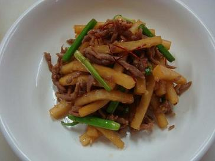

43. 무숙장아찌

*재료
무120g,간장2큰술,소고기30g,미나리 20g,,실고추1g,깨소금약간,참기름약간,식용유약간.
소고기 양념장
간장1작은술,설탕1/2작은술,파약간, 마늘약간,검은후추약간,깨소금 약간.참기름 약간
*요구사항
가. 무는 0.6cm x 0.6cm x 5cm로 써시오.
나. 소고기는 0.3cm x 0.3cm x 4cm로 써시오.
다. 미나리는 4cm로 써시오.
라. 완성품은 80g 이상 제출하시오.
*조리 방법
1. 무는 껍질을 벗겨서 0.6cm x 0.6cm x 5cm로 썰어둔다.
2. 간장 3T에 무를 절여둔다
3. 절여져서 색이 조금 나면 무는 건져내고 그 간장을 냄비에 살짝 끓여서 넓은그릇에 식힌다. 그후 다시 무에 부어 절여준다.
4. 소고기는 4cm로 채썰어 기본양념해두고, 미나리는 4cm길이로 잘라둔다.
5. 실고추는 3cm로 잘라둔다.
6. 절여진 무느 키친타올이나 행주에 꼭 짜서 준비해둔다.
7. 후라이팬에 기름두르고 중불에서 고기를 볶다가 익으면 무를 넣어볶고 미나리를 넣어 순이 죽울때까지 볶아준후 실고추를 넣어 살짝 볶다가 불끄고 그릇에 담아 제출한다.
*유의사항
1. 무의 크기는 일정하게 썬다.
2. 조리된 무의 색깔이 지나치게 검어지지 않도록 한다.
3. 각 재료의 볶는 순서에 유의하며 함께 볶아 낸다.